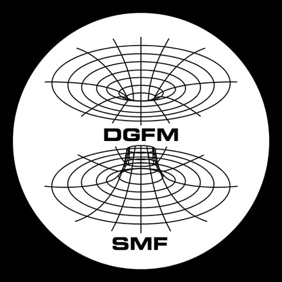

Home
-
👤 Tonatiuh Matos
Departamento de Física

Address Departamento de Física
Cinvestav
A.P. 14-740 07000
GAM, CDMX
México
Email

-

-
📞 Contact & Administration
Maria de la Luz Rodriguez (Malu)
Administrative Assistant
Astrophysics, Cosmology and
Numerical Relativity Group
Email
 Phone
Phone
+52 55 5747 3834 -
🏛️ Institutional Affiliations

-
🎥 Media & Outreach
Videos
-
Articles